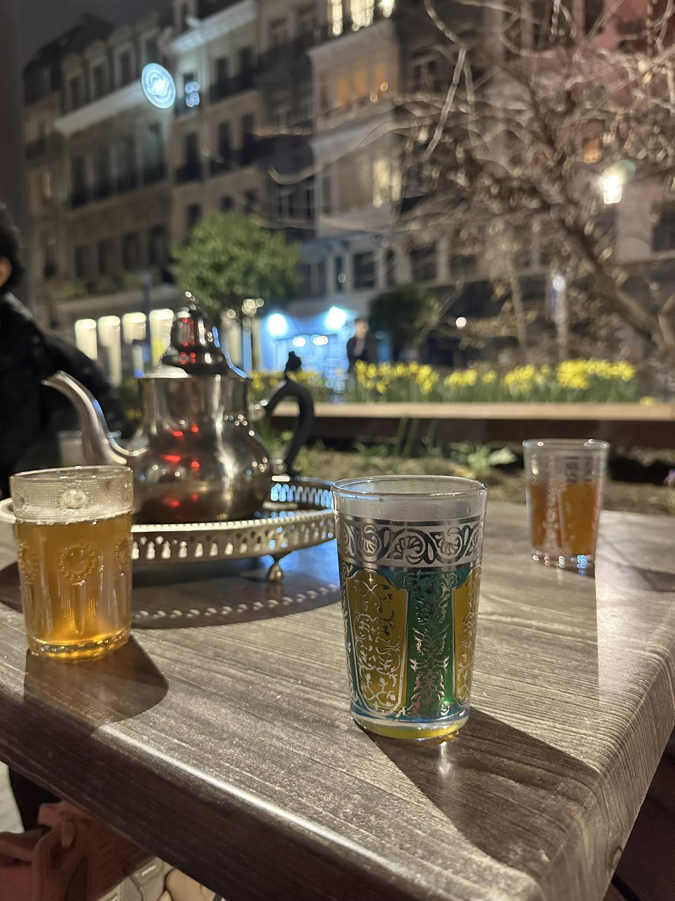

| Hostname |
{{ info.plat.node() }} |
| Boot Time |
{{ info.boottime }} |
| OS Platform |
{{ info.plat.system() }} |
| OS Version |
{{ info.plat.version() }} |
| Python Version |
{{ info.plat.python_version() }} |
| Processor & Cores |
{{ info.cpu.count }} x {{ info.cpu.brand }} |
| System Memory |
{{ (info.mem.total / (1024*1024*1024)) | round(0,'ceil') |int }}GB ({{info.mem.percent}}% used) |
| Network Interfaces |
{% for iface, snics in info.net.items() %} {% for snic in snics if (snic.family == 2) %}
{{ iface }} - {{ snic.address }}
{% endfor %} {% endfor %}
|
Photos & Videos
Morad était autrefois un simple jeune homme, mais son talent exceptionnel et sa détermination inébranlable l'ont propulsée vers les sommets de la célébrité. Issue d'un petit village, elle a gravi les échelons du succès avec une persévérance hors du commun. Sa voix envoûtante a captivé des millions d'auditeurs, et ses performances en direct ont conquis les cœurs du public du monde entier. Devenue une véritable icône du monde du Cloud Computing, Sara incarne désormais le rêve réalisé, rappelant à chacun qu'avec foi et travail acharné, tout est possible.
Atayyyy
Jump Jump !!
Paparazzi Saison 2

Moroccan donuts & Atay & Tarik
Le coach !!!
Atay encore
